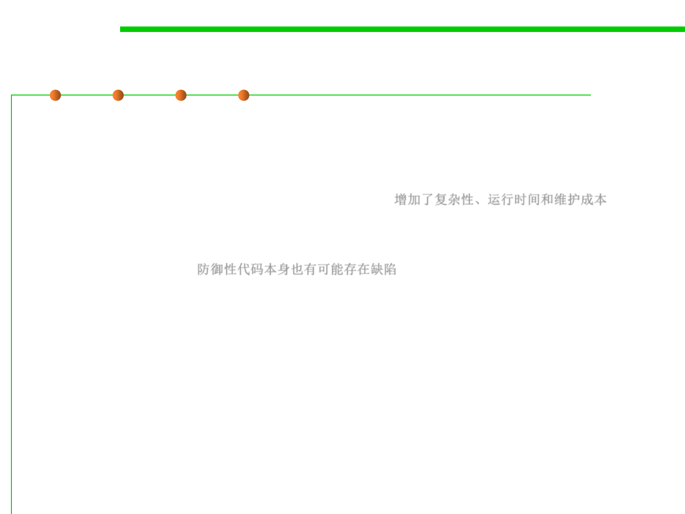

7.3 Assertions and Defensive Programming
Being Defensive about Defensive Programming
▪ Too much defensive programming creates problems of its own.
– Overly defensive programming however introduces unnecessary code for
errors impossible to even happen, adds complexity to the software, thus
wasting runtime and maintenance costs. 增加了复杂性、运行时间和维护成本
– Code installed for defensive programming is not immune to defects, and
you’re just as likely to find a defect in defensive-programming code as in
any other code. 防御性代码本身也有可能存在缺陷
– There is also the risk that the code traps or prevents too many exceptions,
potentially resulting in unnoticed, incorrect results.
▪ Think about where you need to be defensive, and set your
defensive-programming priorities accordingly. 设计好何处进行防御
，制定相应的防御策略